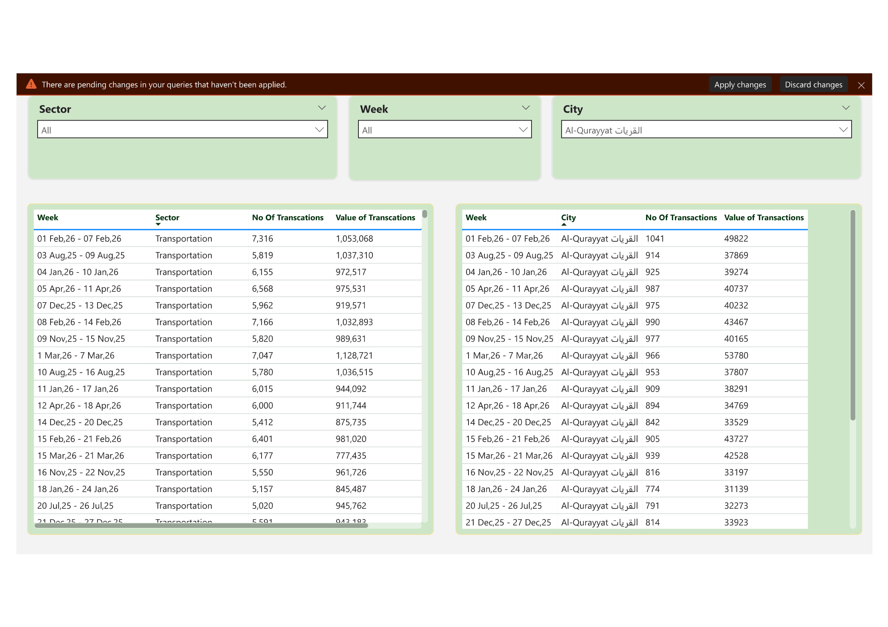

PDF Automation Dashboard
Automated solution to handle changing PDF formats and build a stable Power BI pipeline.

AdventureWorks Dashboard
Built during certification with advanced Power BI features including bookmarks and drill-through.

Electrical Meter Monitoring
Dashboard inspired by real-world systems to monitor energy, voltage, and efficiency.